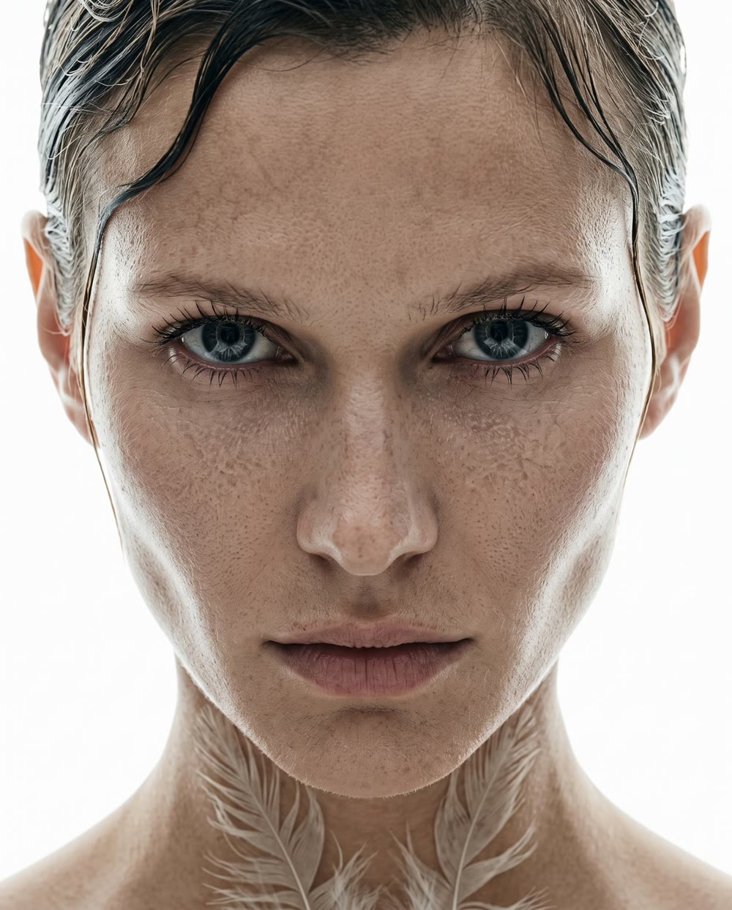
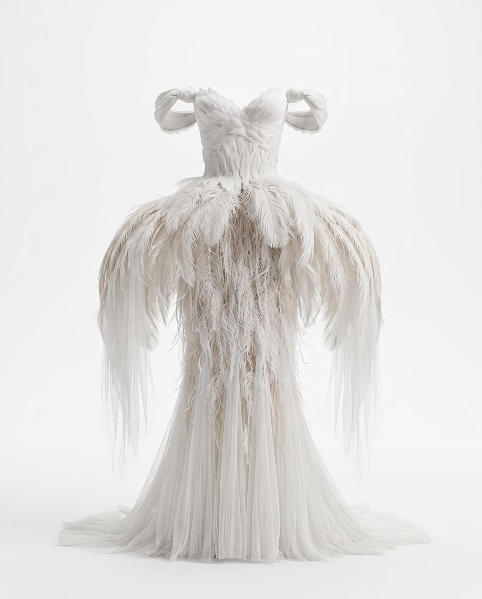
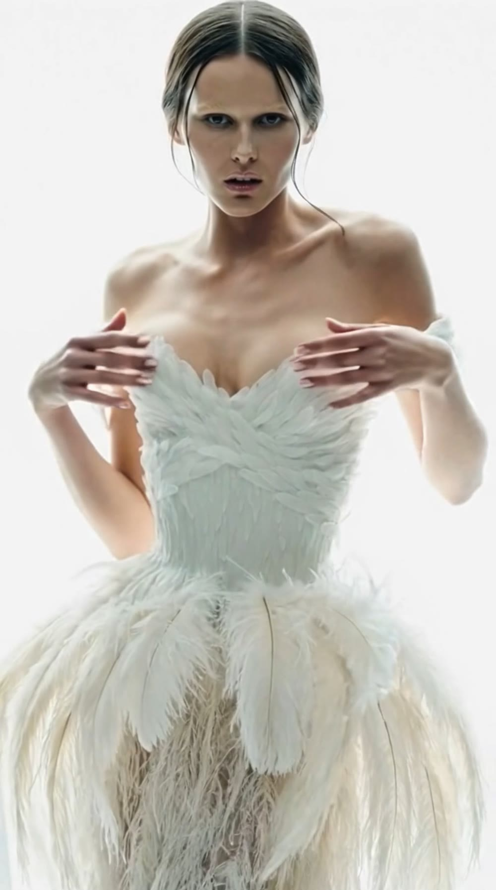
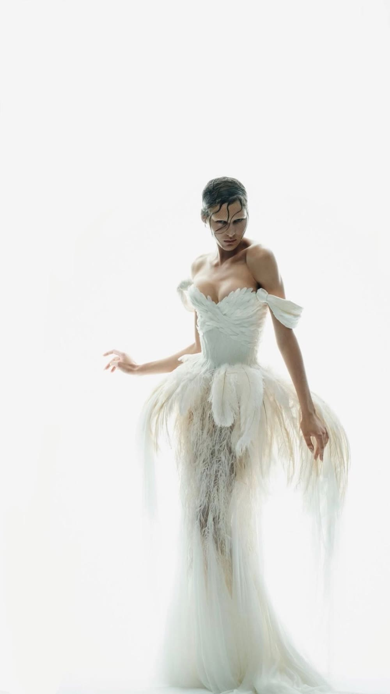

Референс · лицо

face_ref.jpg
Референс · платье

dress_ref.jpg
Промпт · кадр
Image
9:16
Запустить
Результат · кадр 01
0%

frame_01.png
Промпт · движение
Video
5 сек
Запустить
Результат · видео
0%

▶
0:05
scene_01.mp4
Идея → кадр → видео